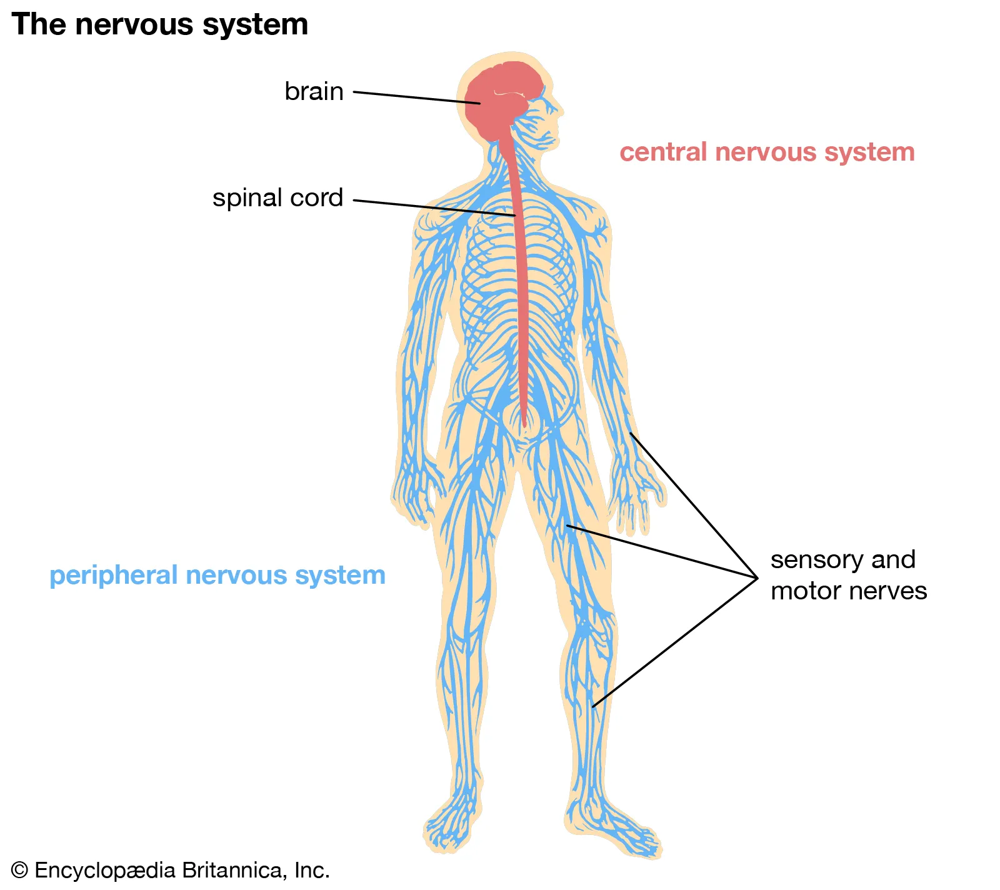

Nervous System
The nervous system is the major controlling, regulatory, and communicating system in the body. It is the center of all mental activity including
thought, learning, and memory. Together with the endocrine system, the nervous system is responsible for regulating and maintaining homeostasis.
The brain is protected by the skull, while the spinal cord, which is about 17 inches (43 cm) long, is protected by the vertebral column.The brain
sends messages via the spinal cord to peripheral nerves throughout the body that serve to control the muscles and internal organs.
Parts of the Nervous System
- The forebrain, midbrain, hindbrain, and spinal cord form the central nervous system (CNS).
- The peripheral nervous system is made up of nerves that branch off from the spinal cord and extend to all parts of the body.
Facts about the Nervous System
- There are more nerve cells in the human brain than there are stars in the Milky Way.
- If we lined up all the neurons in our body, it would be around 965 km long.
- There are 100 billion neurons in your brain alone.
- A newborn baby's brain almost triples in size during the course of its first year.
